A Integração
 (Processo de integração com o E-commerce)
(Processo de integração com o E-commerce)
Veja a Especificação Técnica para mais detalhes.
O que é Venda à Ordem?
Venda à ordem é uma operação triangular, configura-se como aquela em que determinada mercadoria é adquirida sob a condição de a sua entrega ser efetivada pelo próprio fornecedor em estabelecimento de terceiro, por conta e ordem do adquirente originário. A venda à ordem é uma modalidade de operação triangular, pois envolve 3 estabelecimentos em uma mesma operação. Assim, nesse tipo de venda, serão utilizadas as seguintes denominações para se abordar o tratamento fiscal adotado:
a) fornecedor - estabelecimento que vende a mercadoria;
b) adquirente original - estabelecimento que adquire a mercadoria e já a revende, sem que essa transite por seu estabelecimento, ou seja, solicita que a mercadoria adquirida seja entregue diretamente a seu cliente;
c) destinatário - estabelecimento que adquiriu a mercadoria do adquirente original.

Informações Importantes
- Obrigatório controlar estoque dos itens (Pedido e Assistência);
- Atribuir no parâmetro de funcionamento do sistema os status “Faturamento Solicitado à órgão”, NFe “Compartilhada ao Órgão” e “Faturamento Pendente”;
- Criar as transações para nota fiscal de remessa simbólica. Nesta transação deve desmarcar “Movimenta Estoque”, “marcar Gera Receber” e “Venda à Ordem”;
- Criar as transações para nota fiscal por conta e ordem (acobertar o transporte). Nesta transação deve marcar “Movimenta Estoque” e desmarcar “Gera Receber” e “Venda à Ordem”;
- Criar as tags características que serão vinculadas aos itens, são:
- Compartilhar Item(lógico): Obrigatório;
- Sequência de montagem(numérico): Opcional;
- Quantidade máximo a montar(numérico): Opcional;
- Quantidade reservada à empresa(numérico): Opcional. Obs.: Não definindo as tags opcionais, a sequência de montagem será aleatória, sempre irá montar o máximo e não terá estoque reservado a empresa.
- Vincular ao “Adquirente Original” a(s) tabela de preço(s) para pedido de venda e assistência, devendo especificar corretamente para o que estará disponível (Pedido de Venda e/ou Assistência);
- Configurar no “Padrões de Compra” do Adquirente Original a “Modalidade de Frete” como Terceiros e “Tipo Frete” como Acessórios;
- Faturamento via processamento específico: Na hipótese de erro de transmissão, não deve reprocessar documentos trocando a forma de emissão, deve-se aguardar reestabelecer o serviço (SEF) ou cancelar/inutilizar;
- Automatizando todo o processo via agendamento, é necessário instalar o certificado digital no servidor. Este certificado digital deve ser do tipo A1.
Cadastros e configurações
Parâmetro de funcionamento
Acesse o parâmetro de funcionamento na guia “Status” e defina os status abaixo:
- Faturamento Solicitado à Órgão;
- Faturamento Pendente;
- NFe Compartilhada ao Órgão. Esses status são utilizados durante o processamento das operações.
Transações para venda
Crie uma transação para “Remessa por Conta e Ordem de Terceiros”:
- CFOPs 5923 / 6923:
- Esta transação não deve destacar impostos, de acordo com o Art. 266, §4º, b
- Marcar Movimenta Estoque.
- Desmarcar Gera Receber
- Desnarcar Venda à Ordem.
Crie uma segunda transação para “Remessa Simbólica – Venda à Ordem”:
- CFOPs 5118 / 6118: Utilizados quando se tratar de produção do estabelecimento; CFOPs 5119 / 6119: Quando se tratar de mercadoria adquirida ou recebida de terceiros.
- Os impostos são tributados normalmente, quando devido.
- Desmarcar Movimenta Estoque
- Marcar Gera Receber
- Marcar Venda à Ordem
Transações para assistência
Crie uma transação para “Remessa por Conta e Ordem de Terceiros”:
- CFOPs 5949 / 6949: Remessa de mercadoria por conta e ordem de terceiros, em bonificação à ordem.
- Marcar Movimenta Estoque
- Desmarcar Gera Receber.
- Desnarcar Venda à Ordem.
Crie uma transação para “Remessa Simbólica”:
- CFOPs 5118 / 6118: Venda de produção do estabelecimento entregue ao destinatário por conta e ordem do adquirente originário, em venda à ordem – assistência técnica.
- Desmarcar “Movimenta Estoque”,
- Marcar Gera Receber.
- Marcar Venda à Ordem.
Transações para assistência bonificada
Crie uma transação para “Remessa por Conta e Ordem de Terceiros”:
- CFOPs 5949 / 6949: Remessa de mercadoria por conta e ordem de terceiros, em bonificação à ordem.
- Marcar “Movimenta Estoque”
- Desmarcar Gera Receber
- Desmarcar Venda à Ordem
Crie uma transação para “Remessa Simbólica”:
- CFOPs 5949 / 6949: Remessa de mercadoria por conta e ordem de terceiros, em bonificação à ordem.
- Desmarcar “Movimenta Estoque”.
- Marcar Gera Receber.
- Marcar Venda à Ordem.
Cadastro de Mensagem para Nota Fiscal venda remessa simbólica Crie uma mensagem para nota fiscal com o seguinte texto:
“Emitida nos termos do artigo xxx, §xx do RICMS/xxxx(ano) – XX(estado da empresa).
Onde está “x” deve ser preenchido de acordo com o estado da empresa. Está mensagem deve ser vinculada ao parâmetro de funcionamento -> mensagens. Deve relacionar ao “Documento Referenciado”.
Cadastro de Mensagem para Nota Fiscal assistência bonificada Crie uma mensagem para nota fiscal com o seguinte texto:
“Produto bonificado tributado integralmente (ou isento) nos termos do art. xxx, §xx, da lei(ou RICMS) xxxx – XX(estado do fornecedor)”.
Onde está “x” deve ser preenchido de acordo com o estado da empresa. Está mensagem deve ser vinculada ao parâmetro de funcionamento -> mensagens extras.
Cadastro de Tags Características Crie as tags características abaixo:
- Compartilhar Item(lógico): Uso obrigatório. Deve vincular aos itens que serão compartilhados com a MadeiraMadeira.
- Sequência de montagem(numérico): Uso opcional. Determina a sequência de montagem de produtos (relatório de Montagem x Sobras - PCP) em casos onde um mesmo volume é usado em mais de um produto.
- Quantidade máximo a montar(numérico): Uso opcional. Determina a quantidade máxima a montar do produto (relatório de Montagem x Sobras - PCP). Trabalha em conjunto com a tag anterior.
Quantidade reservada à empresa(numérico): Uso opcional. Determina a quantidade de itens que será reservada à empresa.
Acesse o cadastro de itens e faça o vínculo com as tags características.
Cadastro do usuário
Acesse o cadastro do usuário, guia “Processamentos” e adicione todos os processamentos referente a integração com a MadeiraMadeira.
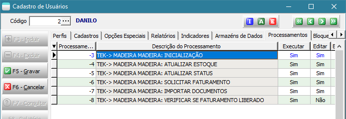
Obs.: Somente realize está etapa se optar pela integração manual.
Cadastro da tabela de preço
Crie duas tabelas de preço, uma para pedido de venda e a outra para assistência. Para cadastrar a tabela de preço deve seguir alguns critérios:
- Não permite “Lançar Descontos”;
- A condição de pagamento é a combinada com a MadeiraMadeira.

Cadastro do cliente Madeira Madeira
Para cadastrar o cliente MadeiraMadeira deve seguir alguns critérios para preenchimento das informações do padrão de compra:
- Tipo de frete: 2 – Terceiros;
- Opção do frete: Acessório;
- Condição Pagto: A prazo;
- Consultor de venda: Deve definir um consultor de venda padrão;
- Supervisor de venda: Caso não seja definido no cadastro do cliente, irá buscar o supervisor do cadastro do consultor de venda;
- Tabela de preço e condição de pagto: Deve definir a tabela de preço para pedido e assistência.
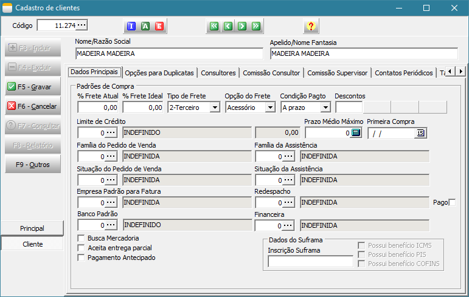
Processamentos da integração
Todo processo de integração pode ser automatizado e por esse motivo, e para isso pode ser usado o Agendador de Tarefas do Windows.
Veremos como criar esse agendamento no decorrer deste manual. Está integração é realizada através dos processamentos específicos
acessados através da tela principal e estão disponíveis nos módulos Faturamento, Integração de Sistemas e BI – Inteligência de Negócios.
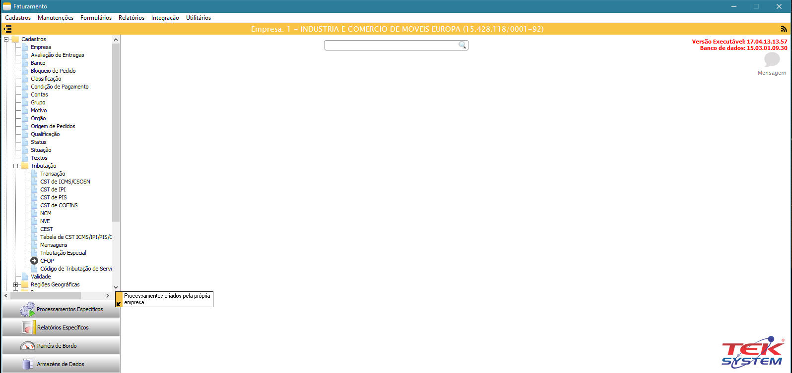
Inicializando as parametrizações(TEK-> MADEIRA MADEIRA: INICIALIZAÇÃO)
O 1º processamento específico que devemos executar é o TEK-> MADEIRA MADEIRA: INICIALIZAÇÃO. Este processamento irá criar uma unidade de
codificação com todos os parâmetros necessários para integração.
Obs.: Todos os processamentos possuem observações importantes que devem ter uma atenção especial.

Ao executar este processamento, será exibido a tela abaixo onde deve ser parametrizado usando todas as configurações realizadas acima. Após executa-la,
será criado uma unidade de codificação(unit) chamada MADEIRA_MADEIRA_CONFIGURACAO, está unit não deve ser alterada, pois todo processo de integração
depende dela. Nesta mesma unit possui alguns exemplos de como agendar os processamentos no Agendador de Tarefas do Windows.
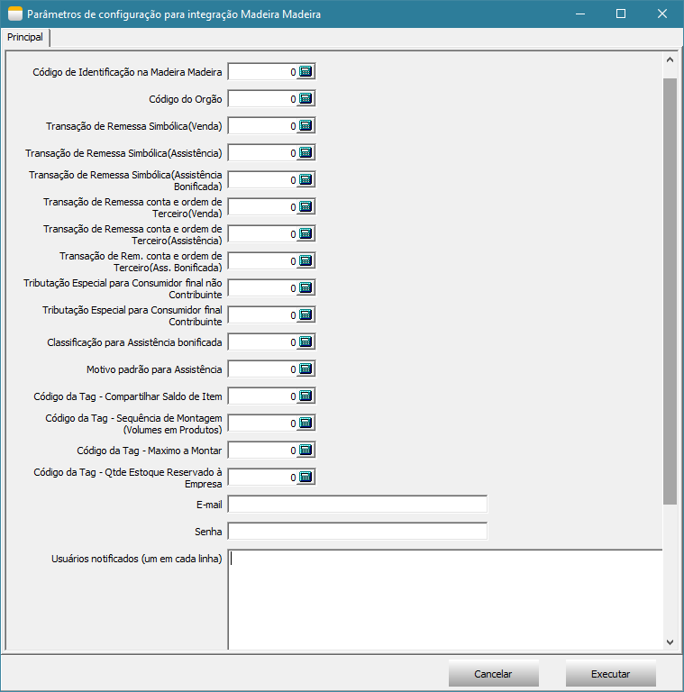
Atualizando o saldo do item(TEK-> MADEIRA MADEIRA: ATUALIZAR ESTOQUE)
O processamento TEK-> MADEIRA MADEIRA: ATUALIZAR ESTOQUE irá atualizar o saldo do item no site. Ao executa-lo será exibido uma tela com filtros e em seguida
será executado o processo. A atualização do saldo do item irá depender da forma de trabalho da empresa, caso a empresa controle estoque de volume, será utilizado
o relatório de Montagem x Sobras, caso não controle estoque de volume e sim do produto, será utilizando o saldo gravado no detalhamento do item.

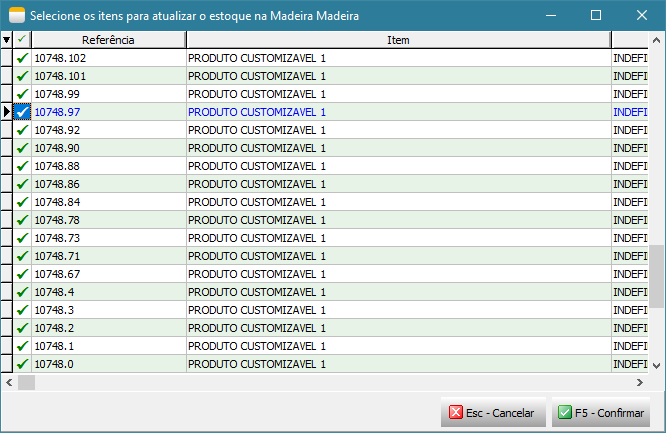
Atualizando o status do item(TEK-> MADEIRA MADEIRA: ATUALIZAR STATUS)
O processamento TEK-> MADEIRA MADEIRA: ATUALIZAR STATUS irá atualizar o status dos itens no site, este processo considera apenas os itens que tiverem alterações no dia.
Ao executa-lo será exibido uma tela com filtros e em seguida será executado o processo.


Importação de pedido de venda/assistência técnica(TEK-> MADEIRA MADEIRA: IMPORTAR DOCUMENTOS)
O processamento TEK-> MADEIRA MADEIRA: IMPORTAR DOCUMENTOS irá atualizar o status dos itens no site, este processo considera apenas os itens que tiverem alterações no dia. Ao executa-lo será exibido uma tela para selecionar todos os documentos que deseja importar, após importar os documentos, não será possível importar o mesmo documento novamente.

Após importação é exibido um detalhamento do que foi importado e também é gravado um arquivo texto no documento com todas as informações importadas da MadeiraMadeira.

Após importação segue o fluxo de conferência do documento, formação de carga e reserva.
Solicitar autorização de Faturamento à MadeiraMadeira(TEK-> MADEIRA MADEIRA: SOLICITAR FATURAMENTO)
O processamento TEK-> MADEIRA MADEIRA: SOLICITAR FATURAMENTO irá solicitar à MadeiraMadeira a autorização para emissão das notas fiscais(remessa e simbólica).
Somente serão autorizados documentos que estiverem em carga e que estejam totalmente reservados. São essas operações que irão garantir que o item possui
estoque e está pronto para dar andamento na entrega da mercadoria. Ao executa-lo será exibido uma tela com filtros de documentos e em seguida será executado
o processo.


Verificar se o faturamento foi liberado pela MadeiraMadeira(TEK-> MADEIRA MADEIRA: VERIFICAR SE FATURAMENTO LIBERADO)
O processamento TEK-> MADEIRA MADEIRA: VERIFICAR SE FATURAMENTO LIBERADO irá monitorar o webservice da MadeiraMadeira aguardando a emissão da nota fiscal
de venda ao consumidor final pela MadeiraMadeira, caso a nota fiscal esteja liberada será feito a importação da nota fiscal emitida pela MadeiraMadeira
para o consumidor final e irá atualizar os dados do transportador inserindo-o na carga, atualizar o valor unitário e valor total dos itens para destinatário
final no documento(pedido/assistência), importar o transportador redespacho e inclui-lo nas observações para nota fiscal de venda à ordem no
documento(pedido/assistência), atualizar os dados do destinatário final e inserir no documento da carga o número, modelo, série, data de emissão e chave
da nota fiscal. Ao executa-lo será exibido uma tela com filtros de documentos e em seguida será executado o processo.
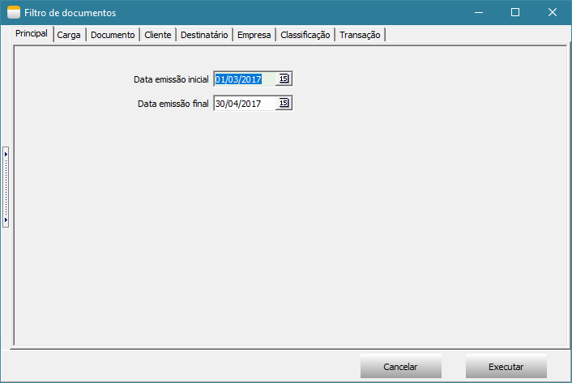
Após importação de todos os dados da nota fiscal, é exibido uma tela com detalhamento do que foi importado e também é gravado um arquivo texto no documento com todas as informações importadas da MadeiraMadeira.
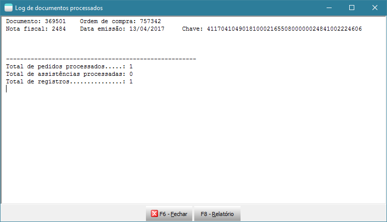
Emitindo nota fiscal(TEK-> MADEIRA MADEIRA: EMITIR NFE)
O processamento TEK-> MADEIRA MADEIRA: EMITIR NFE irá emitir as notas fiscais de remessa e simbólica somente dos documentos que o faturamento foi liberado
através do processamento TEK-> MADEIRA MADEIRA: VERIFICAR SE FATURAMENTO LIBERADO. Ao executar será exibido uma tela com filtros de documentos e em seguida
será executado o processo.
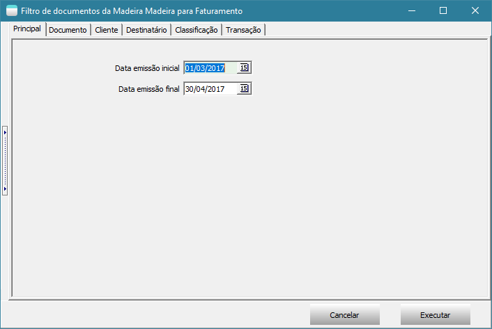
Enviando notas fiscais para MadeiraMadeira(TEK-> MADEIRA MADEIRA: COMPARTILHAR NFE)
O processamento TEK-> MADEIRA MADEIRA: COMPARTILHAR NFE irá enviar o XML das notas fiscais de remessa e simbólica para MadeiraMadeira. Somente será enviado
otas fiscais faturadas. Ao executar será exibido uma tela com filtros de documentos e em seguida será executado o processo.
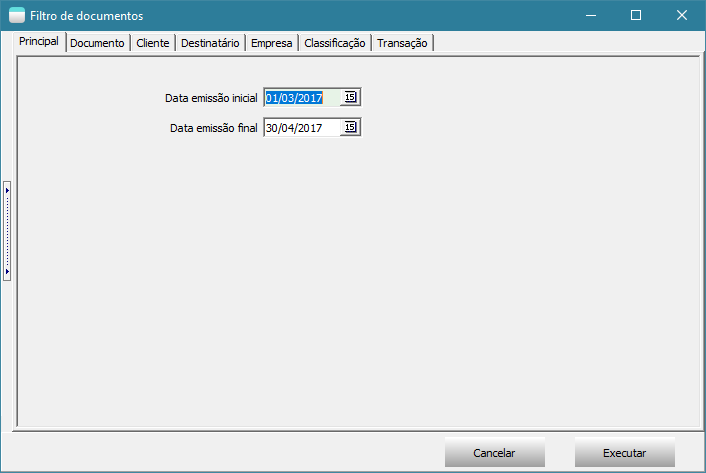
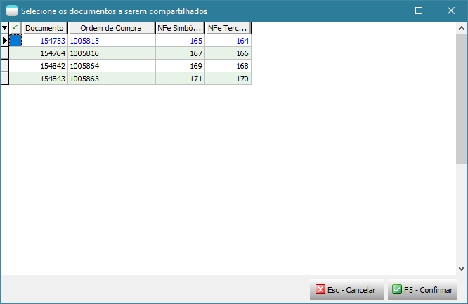
Agendamento dos processos no Agendador de Tarefas do Windows
Importante: Levante um TekServer somente para execução destes processamentos. Este TekServer deve ser 32 bits.
Para realizar o agendamento dos processos no Agendador de Tarefas do Windows, acesse Painel de Controle -> Ferramentas Administrativas -> Agendador de Tarefas.

Selecione Biblioteca do Agendador de Tarefas e clique em Nova Pasta para criar uma pasta chamada Tek-System.

Em seguida selecione a pasta Tek-System e clique em Criar Tarefa...

Na tela “Criar Tarefa” deve seguir um padrão para o nome conforme exemplo abaixo.
Exemplo: Madeira Madeira: Atualizar estoque.
Defina o intervalo de execução do agendamento na guia Disparadores junto com o responsável pelo servidor da empresa.

Na guia Ações clique em Novo para informar o script a ser executado neste agendamento. Ao clicar em Novo será aberto a tela abaixo.
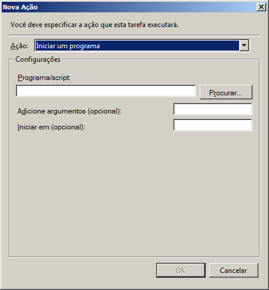
No campo Programa/Script adicione o script para agendamento conforme descrito abaixo. A execução do processamento é realizada pelo módulo ExecMetodoInterpERP.exe, para executar as funções abaixo é necessário preencher alguns parâmetros, são:
- -U: Nome do usuário que irá executar o processamento. O ideal é criar um usuário específico para isso;
- -S: Senha do usuário;
- -P: Porta de conexão com o TekServer;
- -E: Código da empresa;
- -M: Nome do método a ser executado.
Confira se o módulo ExecMetodoInterpERP.exe está no diretório “C:\tek-system\execmc\”. Este módulo fica localizado no diretório dos executáveis do sistema.
Importante: Antes de criar o agendamento para cada script abaixo, faça um teste de execução através do prompt de comando. Para testar a funcionamento do script, copie e cole-o no prompt de comando e tecle Enter para ver o resultado.

Abaixo contém todos os script para cada processamento.
- Automatizar a atualização de saldos:
C:\tek-system\execmc\ExecMetodoInterpERP.exe -U:NOME_USUARIO -S:SENHA -P:5700 -E:1 -M:TEK_MADEIRA_MADEIRA_ITENS.ATUALIZAR_ESTOQUE('')
- Automatizar a atualização de status de itens:
C:\tek-system\execmc\ExecMetodoInterpERP.exe -U:NOME_USUARIO -S:SENHA -P:5700 -E:1 -M:TEK_MADEIRA_MADEIRA_ITENS.ATUALIZAR_STATUS('')
- Automatizar a importação de pedidos do site:
C:\tek-system\execmc\ExecMetodoInterpERP.exe -U:NOME_USUARIO -S:SENHA -P:5700 -E:1 -M:TEK_MADEIRA_MADEIRA_DOCUMENTOS.IMPORTAR
- Automatizar aviso de venda à ordem pronta para faturamento:
C:\tek-system\execmc\ExecMetodoInterpERP.exe -U:NOME_USUARIO -S:SENHA -P:5700 -E:1 -M:TEK_MADEIRA_MADEIRA_VENDA_A_ORDEM.SOLICITAR_FATURAMENTO('')
- Automatizar monitoramento de faturamento liberado pela MadeiraMadeira:
C:\tek-system\execmc\ExecMetodoInterpERP.exe -U:NOME_USUARIO -S:SENHA -P:5700 -E:1 -M:TEK_MADEIRA_MADEIRA_VENDA_A_ORDEM.VERIFICAR_SE_FATURAMENTO_LIBERADO('')
- Automatizar faturamento de venda à ordem:
C:\tek-system\execmc\ExecMetodoInterpERP.exe -U:NOME_USUARIO -S:SENHA -P:5700 -E:1 -M:TEK_MADEIRA_MADEIRA_EMISSAO_NFE.FATURAR
- Compartilhar Notas Fiscais com WebService
C:\tek-system\execmc\ExecMetodoInterpERP.exe -U:NOME_USUARIO -S:SENHA -P:5700 -E:1 -M:TEK_MADEIRA_MADEIRA_COMPARTILHAR_NFE.COMPARTILHAR
Indicadores
É disponibilizado 3 indicadores padrões para auxiliar na integração com MadeiraMadeira, são:
- MADEIRA MADEIRA: QTDE DOC. SEM PEDIDO DE AUTORIZAÇÃO P/ FAT: Apresenta a quantidade de documentos importados que não estão em carga e/ou não foram
totalmente reservados; - MADEIRA MADEIRA: QTDE DOC. AGUARDANDO AUTORIZAÇÃO P/ FAT: Apresenta a quantidade de documentos que já estão em carga totalmente reservados aguardando
autorização da MadeiraMadeira para faturar; - MADEIRA MADEIRA: QTDE DOC. FATURAMENTO PENDENTE PELA EMPRESA: Apresenta a quantidade de documentos autorizados pela MadeiraMadeira, mas pendente de
faturamento pela empresa.
Todos esses indicadores possuem detalhamentos por documento e por item.

Dúvidas ou Sugestões?
Caso você não esteja logado, faça seu login, acesse a area de Issues e cadastre sua dúvida ou sugestão.